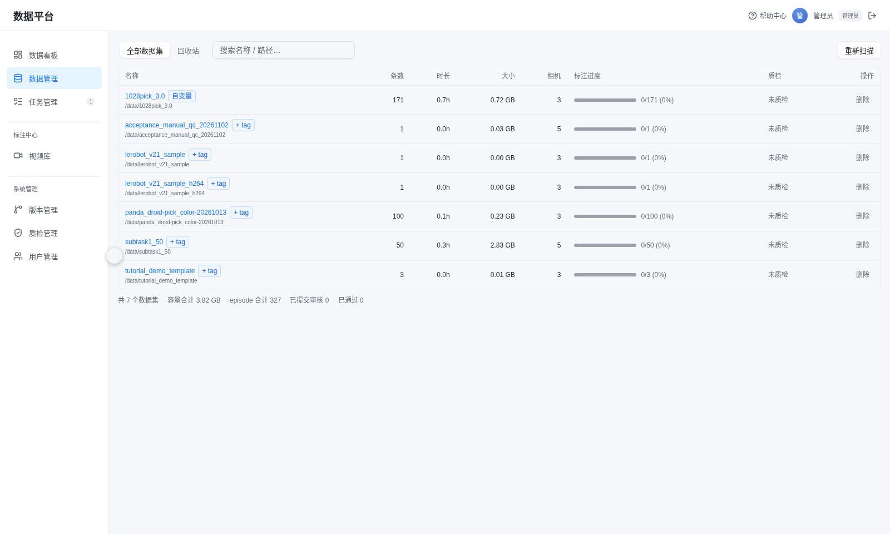
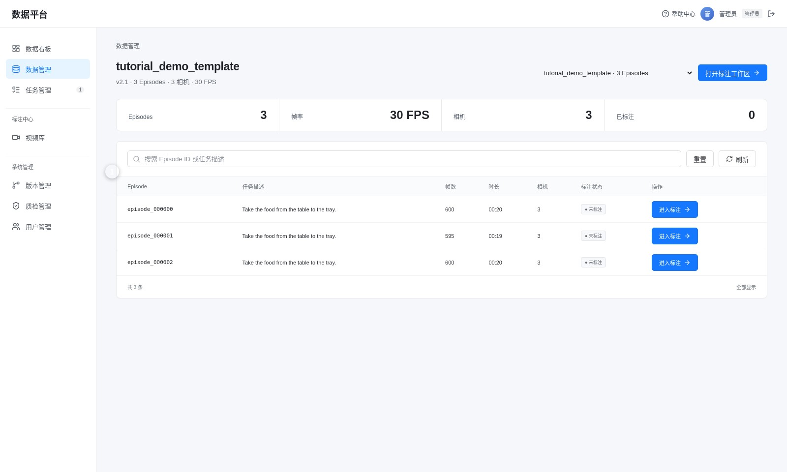

1. 登录与数据管理
管理员账号 admin，密码 admin123。如果是新部署、还没改过密码，初始密码是 admin，首次登录会要求改密；改过之后以实际密码为准。登录后默认进入「数据管理」。
登录
- 打开平台浏览器访问
http://服务器地址:8002/，输入账号和密码。 - 首次登录改密第一次登录会跳到修改密码界面，新密码至少 6 位。
- 进入数据管理登录后默认落在「数据管理」。左侧菜单依次是数据看板、数据管理、任务管理、视频库、版本管理、质检管理、用户管理。
查看数据集
数据管理页列出全部数据集：条数、时长、容量、相机数和标注进度。名称后面的标签是机器人来源，用来区分不同本体采集的数据。

确认数据状态
点数据集名称进入 Episode 列表。每条数据显示时长、任务描述和当前标注状态，用来判断这条数据是还没人碰、正在标、待审核还是已通过。

「数据看板」用来看整体进度：标注状态分布、质检通过率、最近 30 天的增长趋势。需要向团队汇报进度时先看这里。